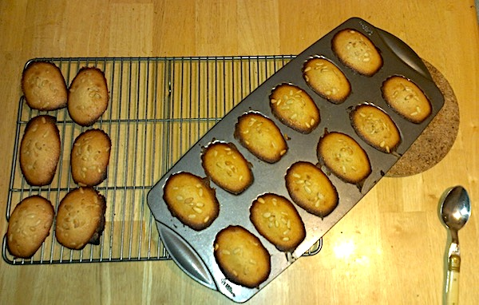
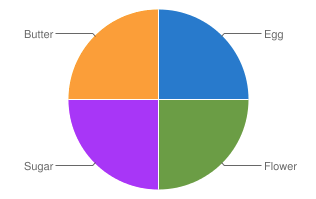

Hugette's Madeleines Recipe
This is the recipe from my Grandmother Hugette. I've tried several others but of course this one is my favorite.
Prep Time: 30 minutes
Cook Time: 10-15 minutes
Ingredients for 18 madeleines
- 120 grams of flour
- 120 grams of butter
- 120 grams of sugar
- 2 eggs
- 1 pinch of salt
- 1 teaspoon of yeast or baking powder
- (optional) 1 lemon zest and/or some vanilla extract
- (optional) pine nuts or raw sliced almonds
- (optional) raspberries
Tools
Instructions
- Prepare yeast according to instructions on package
- Pre-heat oven at 375°F
- Mix soft (but not melted) butter and sugar
- Add eggs and flour (using the sifter) and a pinch of salt
- Add the yeast or baking powder
- (optional) Add the lemon zest or vanilla extract
- Mix until the dough is homogeneous
- Put a little melted butter on the madeleines pan (to prevent sticking)
- Fill each slot on the madeleines pan w/ dough
- (optional) Add sliced almonds and/or pine nuts on top
- (optional) Add a raspberry in the center
- Put in the oven for 10 to 15 minutes (until golden)
- Get the madeleines tray out of the oven, and the madelines out of the tray, and let cool down

Notes
- Best on the day they are baked, but can be kept for a week in a container.
- It is possible to find French butter at 83% fat.
- With the right size of eggs, my Grandmother's recipe uses equal weight of the 4 main ingredients.
